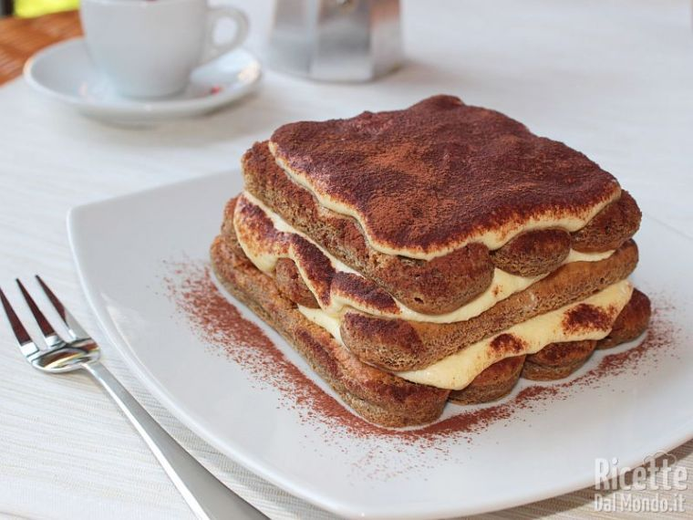

Tiramisù

Description
Tiramisu is an Italian dessert made of ladyfinger pastries (savoiardi) dipped in coffee, layered with a whipped mixture of egg yolks, sugar, and mascarpone, and topped with cocoa powder. The recipe has been adapted into many varieties of cakes and other desserts.
Ingredients
- Mascarpone cheese 3 ⅓ cups (750 g)
- Ladyfingers 8.75 oz (250 g)
- Coffee 1 ⅓ cup (300 g) - (made in a moka pot, with sugar to taste)
- Eggs 5 (260 g) - (very fresh, medium)
- Sugar ⅔ cup (120 g)
- Unsweetened cocoa powder to taste
- Brew about 1¼ cups (300 g) of coffee using a moka pot. Add sugar to taste (about 1 teaspoon) and let it cool in a large, shallow bowl.
- Separate the eggs, making sure no yolk gets into the whites.
- Beat the yolks with half of the sugar using a hand mixer until light and foamy.
- While mixing, gradually add the mascarpone to the yolk mixture until you get a thick, smooth cream.
- Wash and dry the beaters, then whip the egg whites until foamy.
- Gradually add the remaining sugar while whipping the whites to stiff peaks.
- Add a spoonful of whipped egg whites to the mascarpone cream and stir vigorously to loosen the mixture.
- Gently fold in the remaining egg whites, mixing from the bottom up to keep the cream light and airy.
- Spread a generous spoonful of mascarpone cream on the bottom of a 9x13 inch (20x30 cm) dish to cover the base.
- Quickly dip ladyfingers into the cooled coffee on both sides.
- Arrange the soaked ladyfingers in the dish, all in the same direction, to form the first layer.
- Add a layer of mascarpone cream and level it evenly over the ladyfingers.
- Repeat the layering: dipped ladyfingers, then cream, smoothing each layer as you go.
- Transfer the remaining cream to a piping bag with a ½-inch (12 mm) plain tip and decorate the top with small dabs.
- Dust the surface with unsweetened cocoa powder.
- Refrigerate the tiramisu for at least a couple of hours before serving.
- Serve chilled and enjoy your homemade tiramisu!
Back to all recipes